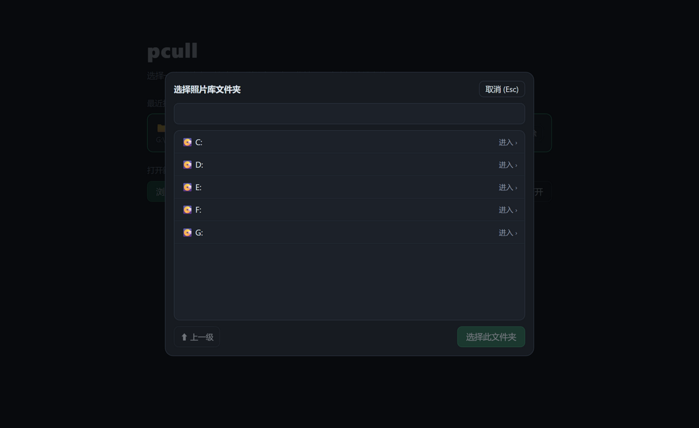
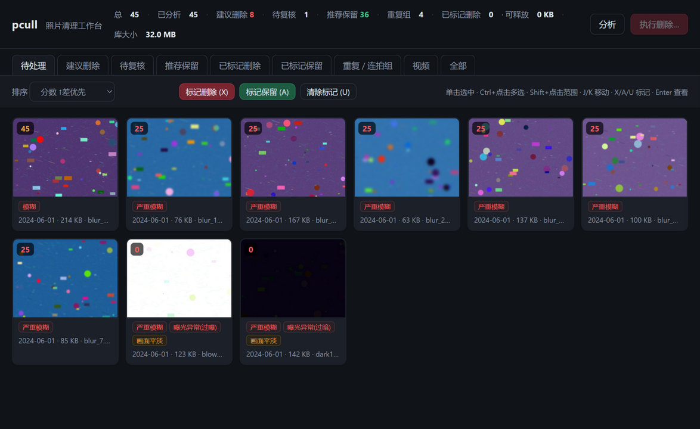
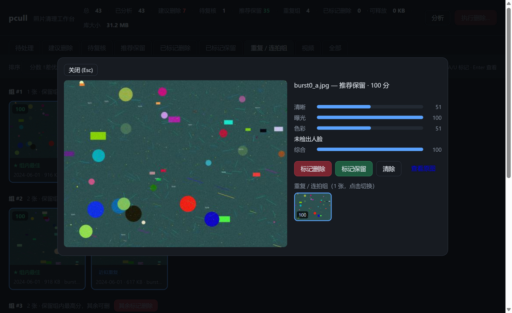

把照片拷进电脑，pcull 自动标记模糊、过曝、闭眼、近似重复并给出 0–100 综合分；然后在一个键盘驱动的本地网页里分诊：X 删除、A 保留、连拍组一键选优。全程本地运行，照片不出你的电脑。



在线演示是假数据的界面原型（键盘 X / A / K 可用）；完整功能请按下方命令在本地运行。
Laplacian 方差归一化打分，严重模糊 / 模糊 / 欠锐三档惩罚。
直方图裁剪比例检测，理由区分过暗与过曝。
MediaPipe 人脸 blendshapes，逐脸睁眼度与闭眼判定。
phash 感知哈希聚类，组内自动保留最高分，其余可删。
ffprobe 元信息 + 均匀抽 6 帧评分，最差帧决定清晰度。
apply 只移动不删除，manifest 记录全部去向。